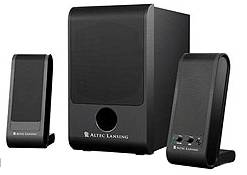

STAM 102 :: Lecture 01 :: Introduction to computers, Anatomy of computers

In human affairs we have reached a point where the problems that we must solve are no longer solvable without the aid of computers. I fear not computers but the lack of them.ISAAC ASIMOV
Introduction to Computers
A computer can be defined as an electronic device capable of processing the data and producing the information.
The computer system essentially comprises three important parts –
- input device,
- central processing unit (CPU) and
- output device.
The CPU itself is made of three components namely,
- arithmetic logic unit (ALU),
- memory unit, and
- control unit.
On broad basis, a computer performs the following tasks:
Input: Sending the data and command to the computer is known as input.
Processing: Work done by the computer with the help of processing hardware and software to produce results is known as processing.
Output: The result displayed by the computer is known as output.
Storage: A place to save result inside or outside the computer is known as storage.
Anatomy of Computers
The following are the parts of a desktop computer.
Power Supply
When you plug your power cable into your computer, you are actually plugging into a socket in the power supply unit that has been fitted inside your case. This component is responsible for converting the 240 volt AC mains power to low voltage DC power needed by computer components. The power supply generates +3.3V, +5V, +12V, -5V. These voltages must be constant, right up to the maximum current your system will draw under load.
Monitor- Commonly known as a "screen," the monitor gives you a visual display of what your computer is up to. Monitor displays are divided into pixels. The higher the pixel count, the higher the "resolution." Resolutions are measured in Rows x Columns. Common resolution settings are 640 x 480, 800 x 600, 1024 x 768, 1280 x 1024, etc.
Mother board
The mainboard I which is sometimes called a motherboard. This is usually the largest circuit-board in the computer, and every other component in the computer connects to it.
Central Processing Unit
An Intel CPU
The Central Processing Unit (CPU)is usually called either a CPU or just a Processor. The CPU is the brain of the system. It executes all the program code from the operating system and the applications the user runs and processing of data. It sends CPU commands to direct the actions of all the other components in the computer.
Main Memory or Random Access Memory (RAM)
RAM, which stands for Random Access Memory, is the short term memory that the computer uses to keep track of what it's doing. If the computer loses power, anything stored in RAM is lost.
INPUT AND OUTPUT DEVICES
Input Devices
Input device is a hardware device that sends information to the computer.
MouseMouse Mouse is a pointer device.The mouse allows an individual to control a pointer in a graphical user interface (GUI). Utilizing a mouse a user has the ability to perform various functions such as opening a program or file and does not require the user to memorize commands.
Digital camera
A type of camera that stores the pictures or video it takes in electronic format instead of to film.
Web Cam
A camera connected to a computer that allows anyone connected to the Internet to view still pictures or motion video of a user.
Joystick
A computer joystick allows an individual to easily navigate an object in a game such as navigating a plane in a flight simulator.
Keyboard
One of the main input devices used on a computer, a computer keyboard looks very similar to the keyboards of electric typewriters, with some additional keys.
Microphone
Sometimes abbreviated as mic, a microphone is a hardware peripheral that allows computer users to input audio into their computers.
Scanner
{kind=link}
Input device that allows a user to take an image and/or text and convert it into a digital file, allowing the computer to read and/or display the scanned object
Output Device
Any peripheral that receives and/or displays output from a computer. Below are some examples of different types of output devices commonly found on a computer.
Monitor
CRT (Cathode Ray Tube) Monitors are built very similarly to older (tube) television sets. They are heavy, bulky, , take up a lot of desk space, and emit radiation.
CRT (Cathode Ray Tube) Monitors
LCD (Liquid Crystal Display) Monitors are thin and flat. They are light, compact, take up very little desk space emit no known radiation.
LCD (Liquid Crystal Display) Monitor
Printer
A printer is an output device responsible for taking computer data and generating a hard copy of that data.
Projector
Speakers

| Download this lecture as PDF here |